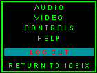

| To exit 10Six, hit "Esc" when on the playfield to get the
options menu. Here you can adjust audio and video settings and change key bindings.
To exit, select "Logout," which brings up a submenu asking if you want to Lock your camp or leave it Active. Active camps can be entered by other while you're offline, while Locked camps cannot. If your newbie defenses are active or if you are not in your own camp, you will not be given the option to Lock. Newbie camps are automatically locked. |
 |